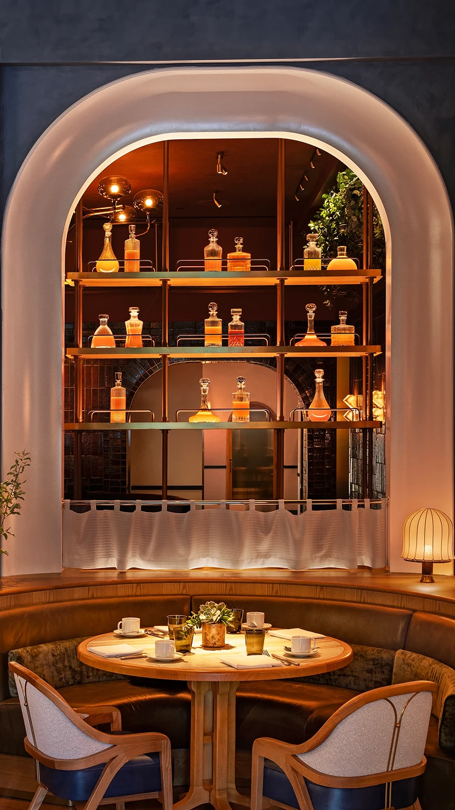
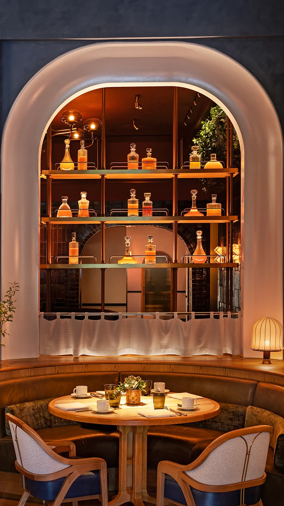

Bourbon Steak
JW Marriott Essex House
New York, New York, USA
2024

Food & Beverage
Designer |
AvroKO
Purchaser |
Goodshop
Photographer | Michael Kleinberg
Bespoke
Case Goods
Soft Seating
Banquettes
Located within the historic
JW Marriott Essex House
overlooking Central Park, acclaimed chef Michael Mina’s first New York
City restaurant is a nod to iconic American steakhouses. The hotel’s
art deco and art nouveau details are cleverly woven together through
the interiors of Bourbon Steak, for which design studio AvroKO
combined the former’s strong geometry and the latter’s sweeping curves
in various ways to produce an array of striking dining areas.


 
